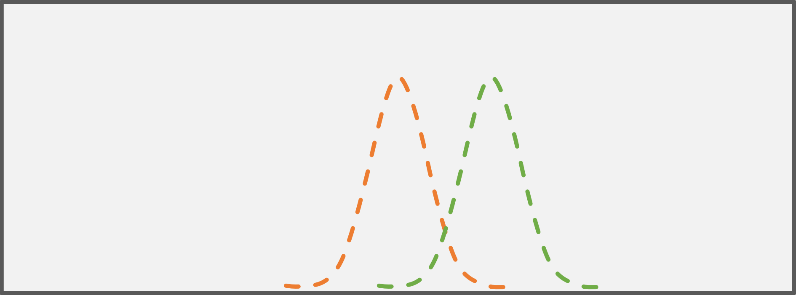

I love statistical testing - A sentence math teachers don't hear often during their time at school. In this tutorial we aim to give you a short introduction of the theory and how to
perform the most used statistical test: the t-test
Suppose you have measured the length of some leaves of two trees and you want to find out if the average length of the leaves is the same or if they differ from each other.
If you knew the population distributions of all leaves hanging on both trees the task would be easy, but since we only have samples from both populations, we have to apply a statistical test.
Student's t-test can be applied to test whether two samples have the same mean (H0), or if the means are different (H1). There are two requirements to the samples that have to be fulfilled:
The variances of both samples have to be equal.
The samples have to follow a normal distribution.
Note: Slight deviations from these requirements can be accepted but strong violations result in an inflated false positive rate. If the variances are not equal a Welch test can be performed.There are some tests out there to check if the variances are equal or if the sample follows a normal distribution, but their effectiveness is discussed.You always should consider the shape of the theoretical background distribution, instead of relying on preliminary tests rashly.
The t-test is one of the most used statistical tests in datascience. It is used to compare two samples in terms of statistical significance.
Often a significance threshold (or α level) of 0.05 is chosen to define if a p value is defined as statistically significant. A p value describes how likely it is to observe an effect
at least as extreme as you observed (in the comparison) by chance. Low p values indicate a high confidence to state that there is a real difference and the observed difference is not caused by chance.
For our purposes, we will use the housefly wing length dataset (from Sokal et al., 1955, A morphometric analysis of DDT-resistant and non-resistant housefly strains).
Head over to the Getting started tutorial where it is shown how to import datasets in a simple way.
// We retrieve the dataset via FSharp.Data:letrawDataHousefly=Http.RequestString@"https://raw.githubusercontent.com/fslaborg/datasets/main/data/HouseflyWingLength.txt"letdataHousefly:seq<float>=Frame.ReadCsvString(rawDataHousefly,false,schema="wing length (mm * 10^1)")|>Frame.getCol"wing length (mm * 10^1)"|>Series.values// We convert the values to mm|>Seq.map(funx->x/10.)
Let us first have a look at the sample data with help of a boxplot. As shown below, the average wingspan is around 4.5 with variability ranges between 3.5 and 5.5.
We want to analyze if an estimated expected value differs from the sample above. Therefore, we perform a one-sample t-test which covers exactly this situation.
Fig. 1: The one-sample t-test The dashed orange line depicts the distribution of our sample, the green bar the expected value to test against.
openFSharp.StatsopenFSharp.Stats.Testing// The testing module in FSharp.Stats require vectors as input types, thus we transform our array into a vector:letvectorDataHousefly=vectordataHousefly// The expected value of our population.letexpectedValue=4.5// Perform the one-sample t-test with our vectorized data and our exptected value as parameters.letoneSampleResult=TTest.oneSamplevectorDataHouseflyexpectedValue
The function returns a TTestStatistics type. If contains the fields
Statistic: defines the exact teststatistic
DegreesOfFreedom: defines the degrees of freedom
PValueLeft: the left-tailed p-value
PValueRight: the right-tailed p-value
PValue: the two-tailed p-value
As we can see, when looking at the two-tailed p-value, our sample does not differ significantly from our expected value. This matches our visual impression of the boxplot, where the sample distribution
is centered around 4.5.
The t-test is most often used in its two-sample variant. Here, two samples, independent from each other, are compared. It is required that both samples are normally distributed.
In this next example, we are going to see if the gender of college athletes determines the number of concussions suffered over 3 years (from: Covassin et al., 2003, Sex Differences and the Incidence of Concussions Among Collegiate Athletes, Journal of Athletic Training).

Fig. 2: The two-sample t-test The dashed orange and green lines depict the distribution of both samples that are compared with each other.
openSystem.TextletrawDataAthletes=Http.RequestString@"https://raw.githubusercontent.com/fslaborg/datasets/main/data/ConcussionsInMaleAndFemaleCollegeAthletes_adapted.tsv"letdataAthletesAsStream=newSystem.IO.MemoryStream(rawDataAthletes|>Encoding.UTF8.GetBytes)// The schema helps us setting column keys.letdataAthletesAsFrame=Frame.ReadCsv(dataAthletesAsStream,hasHeaders=false,separators="\t",schema="Gender, Sports, Year, Concussion, Count")dataAthletesAsFrame.Print()// We need to filter out the columns and rows we don't need. Thus, we filter out the rows where the athletes suffered no concussions // as well as filter out the columns without the number of concussions.letdataAthletesFemale,dataAthletesMale=letgetAthleteGenderDatagender=letdataAthletesOnlyConcussion=dataAthletesAsFrame|>Frame.filterRows(funrobjS->objS.GetAs"Concussion")letdataAthletesGenderFrame=dataAthletesOnlyConcussion|>Frame.filterRows(funrobjS->objS.GetAs"Gender"=gender)dataAthletesGenderFrame|>Frame.getCol"Count"|>Series.values|>vectorgetAthleteGenderData"Female",getAthleteGenderData"Male"
Again, let's check our data via boxplots before we proceed on comparing them.
letboxPlot2=[Chart.BoxPlot(y=dataAthletesFemale,Name="female college athletes",Boxpoints=StyleParam.Boxpoints.All,Jitter=0.2)Chart.BoxPlot(y=dataAthletesMale,Name="male college athletes",Boxpoints=StyleParam.Boxpoints.All,Jitter=0.2)]|>Chart.Combine|>Chart.withY_AxisStyle"number of concussions over 3 years"
Both samples are tested against using FSharp.Stats.Testing.TTest.twoSample and assuming equal variances.
// We test both samples against each other, assuming equal variances.lettwoSampleResult=TTest.twoSampletruedataAthletesFemaledataAthletesMale
With a p value of 0.58 the t-test indicate that there's no significant difference between the number of concussions over 3 years between male and female college athletes.
Paired data describes data where each value from the one sample is connected with its respective value from the other sample.
In the next case, the endurance performance of several persons in a normal situation (control situation) is compared to their performance after ingesting a specific amount of caffeine*.
It is the same person that performs the exercise but under different conditions. Thus, the resulting values of the persons under each condition are compared.
Another example are time-dependent experiments: One measures, e.g., the condition of cells stressed with a high surrounding temperature in the beginning and after 30 minutes.
The measured cells are always the same, yet their conditions might differ.
Due to the connectivity of the sample pairs the samples must be of equal length.
*Source: W.J. Pasman, M.A. van Baak, A.E. Jeukendrup, A. de Haan (1995). The Effect of Different Dosages of Caffeine on Endurance Performance Time, International Journal of Sports Medicine, Vol. 16, pp225-230.
letrawDataCaffeine=Http.RequestString@"https://raw.githubusercontent.com/fslaborg/datasets/main/data/CaffeineAndEndurance(wide)_adapted.tsv"letdataCaffeineAsStream=newSystem.IO.MemoryStream(rawDataCaffeine|>Encoding.UTF8.GetBytes)letdataCaffeineAsFrame=Frame.ReadCsv(dataCaffeineAsStream,hasHeaders=false,separators="\t",schema="Subject ID, no Dose, 5 mg, 9 mg, 13 mg")// We want to compare the subjects' performances under the influence of 13 mg caffeine and in the control situation.letdataCaffeineNoDose,dataCaffeine13mg=letgetVectorFromColcol=dataCaffeineAsFrame|>Frame.getColcol|>Series.values|>vectorgetVectorFromCol"no Dose",getVectorFromCol"13 mg"// Transforming our data into a chart.letvisualizePairedData=Seq.zipdataCaffeineNoDosedataCaffeine13mg|>Seq.mapi(funi(control,treatment)->letparticipant="Person "+stringiChart.Line(["no dose",control;"13 mg",treatment],Name=participant))|>Chart.Combine|>Chart.withX_AxisStyle""|>Chart.withY_AxisStyle("endurance performance",MinMax=(0.,100.))
The function for pairwise t-tests can be found at FSharp.Stats.Testing.TTest.twoSamplePaired. Note, that the order of the elements in each vector must be the same, so that a pairwise comparison can be performed.
Multiple items val seq : sequence:seq<'T> -> seq<'T> <summary>Builds a sequence using sequence expression syntax</summary> <param name="sequence">The input sequence.</param> <returns>The result sequence.</returns>
-------------------- type seq<'T> = System.Collections.Generic.IEnumerable<'T> <summary>An abbreviation for the CLI type <see cref="T:System.Collections.Generic.IEnumerable`1" /></summary> <remarks>
See the <see cref="T:Microsoft.FSharp.Collections.SeqModule" /> module for further operations related to sequences.
See also <a href="https://docs.microsoft.com/dotnet/fsharp/language-reference/sequences">F# Language Guide - Sequences</a>.
</remarks>
Multiple items val float : value:'T -> float (requires member op_Explicit) <summary>Converts the argument to 64-bit float. This is a direct conversion for all
primitive numeric types. For strings, the input is converted using <c>Double.Parse()</c>
with InvariantCulture settings. Otherwise the operation requires an appropriate
static conversion method on the input type.</summary> <param name="value">The input value.</param> <returns>The converted float</returns>
-------------------- [<Struct>]
type float = System.Double <summary>An abbreviation for the CLI type <see cref="T:System.Double" />.</summary> <category>Basic Types</category>
-------------------- type float<'Measure> =
float <summary>The type of double-precision floating point numbers, annotated with a unit of measure.
The unit of measure is erased in compiled code and when values of this type
are analyzed using reflection. The type is representationally equivalent to
<see cref="T:System.Double" />.</summary> <category index="6">Basic Types with Units of Measure</category>
Multiple items module Frame
from Deedle
-------------------- type Frame =
inherit DynamicObj
new : unit -> Frame
-------------------- type Frame<'TRowKey,'TColumnKey (requires equality and equality)> =
interface IDynamicMetaObjectProvider
interface INotifyCollectionChanged
interface IFsiFormattable
interface IFrame
new : rowIndex:IIndex<'TRowKey> * columnIndex:IIndex<'TColumnKey> * data:IVector<IVector> * indexBuilder:IIndexBuilder * vectorBuilder:IVectorBuilder -> Frame<'TRowKey,'TColumnKey> + 1 overload
member AddColumn : column:'TColumnKey * series:seq<'V> -> unit + 3 overloads
member AggregateRowsBy : groupBy:seq<'TColumnKey> * aggBy:seq<'TColumnKey> * aggFunc:Func<Series<'TRowKey,'a>,'b> -> Frame<int,'TColumnKey>
member Clone : unit -> Frame<'TRowKey,'TColumnKey>
member ColumnApply : f:Func<Series<'TRowKey,'T>,ISeries<'TRowKey>> -> Frame<'TRowKey,'TColumnKey> + 1 overload
member DropColumn : column:'TColumnKey -> unit
...
val getCol : column:'C -> frame:Frame<'R,'C> -> Series<'R,'V> (requires equality and equality)
Multiple items module Series
from Deedle
-------------------- type Series =
static member ofNullables : values:seq<Nullable<'a0>> -> Series<int,'a0> (requires default constructor and value type and 'a0 :> ValueType)
static member ofObservations : observations:seq<'c * 'd> -> Series<'c,'d> (requires equality)
static member ofOptionalObservations : observations:seq<'K * 'a1 option> -> Series<'K,'a1> (requires equality)
static member ofValues : values:seq<'a> -> Series<int,'a>
-------------------- type Series<'K,'V (requires equality)> =
interface IFsiFormattable
interface ISeries<'K>
new : index:IIndex<'K> * vector:IVector<'V> * vectorBuilder:IVectorBuilder * indexBuilder:IIndexBuilder -> Series<'K,'V> + 3 overloads
member After : lowerExclusive:'K -> Series<'K,'V>
member Aggregate : aggregation:Aggregation<'K> * keySelector:Func<DataSegment<Series<'K,'V>>,'TNewKey> * valueSelector:Func<DataSegment<Series<'K,'V>>,OptionalValue<'R>> -> Series<'TNewKey,'R> (requires equality) + 1 overload
member AsyncMaterialize : unit -> Async<Series<'K,'V>>
member Before : upperExclusive:'K -> Series<'K,'V>
member Between : lowerInclusive:'K * upperInclusive:'K -> Series<'K,'V>
member Compare : another:Series<'K,'V> -> Series<'K,Diff<'V>>
member Convert : forward:Func<'V,'R> * backward:Func<'R,'V> -> Series<'K,'R>
...
-------------------- new : pairs:seq<System.Collections.Generic.KeyValuePair<'K,'V>> -> Series<'K,'V> new : keys:seq<'K> * values:seq<'V> -> Series<'K,'V> new : keys:'K [] * values:'V [] -> Series<'K,'V> new : index:Indices.IIndex<'K> * vector:IVector<'V> * vectorBuilder:Vectors.IVectorBuilder * indexBuilder:Indices.IIndexBuilder -> Series<'K,'V>
val values : series:Series<'K,'T> -> seq<'T> (requires equality)
Multiple items module Seq
from Plotly.NET
-------------------- module Seq
from Microsoft.FSharp.Collections <summary>Contains operations for working with values of type <see cref="T:Microsoft.FSharp.Collections.seq`1" />.</summary>
val map : mapping:('T -> 'U) -> source:seq<'T> -> seq<'U> <summary>Builds a new collection whose elements are the results of applying the given function
to each of the elements of the collection. The given function will be applied
as elements are demanded using the <c>MoveNext</c> method on enumerators retrieved from the
object.</summary> <remarks>The returned sequence may be passed between threads safely. However,
individual IEnumerator values generated from the returned sequence should not be accessed concurrently.</remarks> <param name="mapping">A function to transform items from the input sequence.</param> <param name="source">The input sequence.</param> <returns>The result sequence.</returns> <exception cref="T:System.ArgumentNullException">Thrown when the input sequence is null.</exception>
argument y: seq<float> option <summary>
Displays the distribution of data based on the five number summary: minimum, first quartile, median, third quartile, and maximum.
</summary>
module StyleParam
from Plotly.NET
type Boxpoints =
| Outliers
| All
| Suspectedoutliers
| False
static member convert : (Boxpoints -> obj)
union case StyleParam.Boxpoints.All: StyleParam.Boxpoints
module GenericChart
from Plotly.NET <summary>
Module to represent a GenericChart
</summary>
val toChartHTML : gChart:GenericChart.GenericChart -> string <summary>
Converts a GenericChart to it HTML representation. The div layer has a default size of 600 if not specified otherwise.
</summary>
namespace FSharp.Stats
namespace FSharp.Stats.Testing
val vectorDataHousefly : Vector<float>
Multiple items val vector : l:seq<float> -> Vector<float>
-------------------- type vector = Vector<float>
val expectedValue : float
val oneSampleResult : TestStatistics.TTestStatistics
module TTest
from FSharp.Stats.Testing
val oneSample : sample1:Vector<float> -> mu:float -> TestStatistics.TTestStatistics
namespace System
namespace System.Text
val rawDataAthletes : string
val dataAthletesAsStream : System.IO.MemoryStream
namespace System.IO
Multiple items type MemoryStream =
inherit Stream
new : unit -> unit + 6 overloads
member BeginRead : buffer: byte [] * offset: int * count: int * callback: AsyncCallback * state: obj -> IAsyncResult
member BeginWrite : buffer: byte [] * offset: int * count: int * callback: AsyncCallback * state: obj -> IAsyncResult
member CopyTo : destination: Stream * bufferSize: int -> unit
member CopyToAsync : destination: Stream * bufferSize: int * cancellationToken: CancellationToken -> Task
member Dispose : disposing: bool -> unit
member EndRead : asyncResult: IAsyncResult -> int
member EndWrite : asyncResult: IAsyncResult -> unit
member Flush : unit -> unit
... <summary>Creates a stream whose backing store is memory.</summary>
type Encoding =
interface ICloneable
new : unit -> unit + 2 overloads
member Clone : unit -> obj
member Equals : value: obj -> bool
member GetByteCount : chars: nativeptr<char> * count: int -> int + 5 overloads
member GetBytes : chars: nativeptr<char> * charCount: int * bytes: nativeptr<byte> * byteCount: int -> int + 7 overloads
member GetCharCount : bytes: nativeptr<byte> * count: int -> int + 3 overloads
member GetChars : bytes: nativeptr<byte> * byteCount: int * chars: nativeptr<char> * charCount: int -> int + 4 overloads
member GetDecoder : unit -> Decoder
member GetEncoder : unit -> Encoder
... <summary>Represents a character encoding.</summary>
property Encoding.UTF8: Encoding with get <summary>Gets an encoding for the UTF-8 format.</summary> <returns>An encoding for the UTF-8 format.</returns>
(extension) Encoding.GetBytes(chars: inref<System.Buffers.ReadOnlySequence<char>>) : byte [] (+0 other overloads) Encoding.GetBytes(s: string) : byte [] (+0 other overloads) Encoding.GetBytes(chars: char []) : byte [] (+0 other overloads) (extension) Encoding.GetBytes(chars: inref<System.Buffers.ReadOnlySequence<char>>, writer: System.Buffers.IBufferWriter<byte>) : int64 (+0 other overloads) (extension) Encoding.GetBytes(chars: inref<System.Buffers.ReadOnlySequence<char>>, bytes: System.Span<byte>) : int (+0 other overloads) (extension) Encoding.GetBytes(chars: System.ReadOnlySpan<char>, writer: System.Buffers.IBufferWriter<byte>) : int64 (+0 other overloads) Encoding.GetBytes(chars: System.ReadOnlySpan<char>, bytes: System.Span<byte>) : int (+0 other overloads) Encoding.GetBytes(s: string, index: int, count: int) : byte [] (+0 other overloads) Encoding.GetBytes(chars: char [], index: int, count: int) : byte [] (+0 other overloads) Encoding.GetBytes(chars: nativeptr<char>, charCount: int, bytes: nativeptr<byte>, byteCount: int) : int (+0 other overloads)
static member FrameExtensions.Print : frame:Frame<'K,'V> -> unit (requires equality and equality) static member FrameExtensions.Print : frame:Frame<'K,'V> * printTypes:bool -> unit (requires equality and equality)
val dataAthletesFemale : Vector<float>
val dataAthletesMale : Vector<float>
val getAthleteGenderData : ('a -> Vector<float>) (requires equality)
val gender : 'a (requires equality)
val dataAthletesOnlyConcussion : Frame<int,string>
val filterRows : f:('R -> ObjectSeries<'C> -> bool) -> frame:Frame<'R,'C> -> Frame<'R,'C> (requires equality and equality)
val r : int
val objS : ObjectSeries<string>
member ObjectSeries.GetAs : column:'K -> 'R member ObjectSeries.GetAs : column:'K * fallback:'R -> 'R
val dataAthletesGenderFrame : Frame<int,string>
val boxPlot2 : GenericChart.GenericChart
argument y: Vector<float> option <summary>
Displays the distribution of data based on the five number summary: minimum, first quartile, median, third quartile, and maximum.
</summary>
static member Chart.Combine : gCharts:seq<GenericChart.GenericChart> -> GenericChart.GenericChart
val twoSampleResult : TestStatistics.TTestStatistics
val twoSample : assumeEqualVariances:bool -> sample1:Vector<float> -> sample2:Vector<float> -> TestStatistics.TTestStatistics <summary>
Computes a t-test or a Welch test (unequal variances)
</summary>
val rawDataCaffeine : string
val dataCaffeineAsStream : System.IO.MemoryStream
val dataCaffeineAsFrame : Frame<int,string>
val dataCaffeineNoDose : Vector<float>
val dataCaffeine13mg : Vector<float>
val getVectorFromCol : (string -> Vector<float>)
val col : string
val visualizePairedData : GenericChart.GenericChart
Multiple items module Seq
from FSharp.Stats <summary>
Module to compute common statistical measure
</summary>
-------------------- module Seq
from Plotly.NET
-------------------- module Seq
from Microsoft.FSharp.Collections <summary>Contains operations for working with values of type <see cref="T:Microsoft.FSharp.Collections.seq`1" />.</summary>
val zip : source1:seq<'T1> -> source2:seq<'T2> -> seq<'T1 * 'T2> <summary>Combines the two sequences into a list of pairs. The two sequences need not have equal lengths:
when one sequence is exhausted any remaining elements in the other
sequence are ignored.</summary> <param name="source1">The first input sequence.</param> <param name="source2">The second input sequence.</param> <returns>The result sequence.</returns> <exception cref="T:System.ArgumentNullException">Thrown when either of the input sequences is null.</exception>
val mapi : mapping:(int -> 'T -> 'U) -> source:seq<'T> -> seq<'U> <summary>Builds a new collection whose elements are the results of applying the given function
to each of the elements of the collection. The integer index passed to the
function indicates the index (from 0) of element being transformed.</summary> <param name="mapping">A function to transform items from the input sequence that also supplies the current index.</param> <param name="source">The input sequence.</param> <returns>The result sequence.</returns> <exception cref="T:System.ArgumentNullException">Thrown when the input sequence is null.</exception>
val i : int
val control : float
val treatment : float
val participant : string
Multiple items val string : value:'T -> string <summary>Converts the argument to a string using <c>ToString</c>.</summary> <remarks>For standard integer and floating point values the and any type that implements <c>IFormattable</c><c>ToString</c> conversion uses <c>CultureInfo.InvariantCulture</c>. </remarks> <param name="value">The input value.</param> <returns>The converted string.</returns>
-------------------- type string = System.String <summary>An abbreviation for the CLI type <see cref="T:System.String" />.</summary> <category>Basic Types</category>
val twoSamplePairedResult : TestStatistics.TTestStatistics
val twoSamplePaired : sample1:Vector<float> -> sample2:Vector<float> -> TestStatistics.TTestStatistics <summary>
which observations in one sample can be paired with observations in the other sample.
</summary>